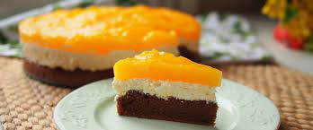

Fanta Szelet

Hozzávalók:
A tésztához:
- 6db tojás
- 6ek porcukor
- 1dl ételolaj
- 4ek liszt
- 0.6dkg sütőpor
- 2ek kakaópot
A krémhez
- 25dkg vaj
- 20dkg porcukor
- 50dkg tehén túró
- 1.2dkg vaníliás cukor
- 1db citrom reszelt héja
A mázhoz:
- 8dkg vaníliás pudingpor
- Fanta szénsavas üdítő
- 4ek cukor
Allergénok:
Glutén
 Tojás
Tojás
 Tej
Tej

Elkészitése:
- A tojásokat a cukorral 10 perc alatt habosra keverjük, ezután hozzáadjuk az étolajat. A lisztet, a sütőport és a kakaóport összekeverjük és egy fakanállal a tojásos masszához keverjük. Egy 23 x 34 cm-es tepsit sütőpapírral kibélelünk és beleöntjük a masszát. Előmelegített sütőben 180 fokon 25 perc alatt készre sütjük.
- A krémhez a vajat, a porcukrot, a villával összetört túrót, a citromhéjjal és a vaníliás cukorral alaposan kikeverjük, majd a kihűlt piskótára simítjuk és hűtőbe tesszük, amíg elkészítjük a mázat.
- A mázat ugyanúgy készítjük el, mintha pudingot főznénk, csak most nem tejjel készül, vagyis a pudingport a szénsavas üdítővel és a cukorral sűrűre főzzük. Egy szép átlátszó narancssárga krémet kapnunk, amelyet egy kicsit hűlni hagyunk. Ha langyosra hűlt, a túrós krémre simítjuk és 2 órára hűtőbe tesszük.
Segédlet